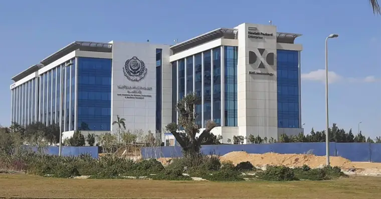

الأكاديمية العربية للعلوم والتكنولوجيا والنقل البحري

الأكاديمية العربية للعلوم والتكنولوجيا والنقل البحري (اختصارا AAST أو AASTMT) وهي منظمة تعليمية متخصصة في العلوم والتكنولوجيا والنقل البحري تابعة لجامعة الدول العربية تهدف إلى التعليم، التدريب، الأعمال البحثية.
مبنى كلية الهندسة، القاهرة.
تاريخ إنشاء الأكاديمية
نشأت فكرة إقامة الأكاديمية كمعهد إقليمى للنقل البحرى في اجتماعات لجنة المواصلات بجامعة الدول العربية في 11 مارس عام 1970 بصدور قرار مجلس جامعة الدول العربية رقم: 2631/1970 بدورته الثالثة والخمسين بالموافقة على إنشاء مركز إقليمى للتدريب على أعمال النقل البحرى، وقد نص القرار على تكليف جمهورية مصر العربية نيابة عن الدول العربية بطلب معونة فنية من المنظمات المتخصصة للأمم المتحدة في مجال النقل البحرى لأنشائها. وفي نهاية عام 1971 أوفدت الأمم المتحدة لجنة مشتركة من منظماتها المعنية لدراسة مدى احتياج المنطقة لهذا المشروع وقد أوصت بضرورة إنشاء معهد تدريب بحرى إقليمى وتوفير المعونة اللازمة له ووافق البرنامج الإنمائي للأمم المتحدة (UNDP) على اعتماد مبلغ 3.2 مليون دولار على أن تساهم الدول العربية المشتركة بمبلغ 8.25 مليون جنيها مصريا على مدار خمس سنوات كما أوصت أيضا اللجنة بعد زيارة العديد من دول المنطقة باختيار مدينة الأسكندرية كمقر لهذا المشروع. كذلك أعد برنامج الأمم المتحدة للتنمية (UNDP) وثيقة مشروع الأكاديمية العربية للنقل البحرى بالأسكندرية رقم (REM/71L286/01/19) بالتعاون مع المنظمة الاستشارية البحرية للحكومات (IMCO) بصفتها وكالة منفذة للمشروع ومؤتمر الأمم المتحدة للتجارة والتنمية (UNCTAD) بصفته وكالة مشاركة.
مكانة الجامعة عالميا
هذا وقد تمّ تصنيف الجامعة في المرتبة 91 حسب تصنيف الـ QS لعام 2020، وتضم حوالي 29700 طالب من بينهم حوالي ألفي طالب دولي.
الكليات
كلية النقل البحرى بالإسكندرية و الشارقة
كلية الهندسة بالإسكندرية و القاهرة و القرية الذكية و بورسعيد و أسوان
كلية النقل الدولى و اللوجستيات بالإسكندرية و القاهرة و القرية الذكية و الدقى و بورسعيد و اسوان
كلية الحاسبات و تكنولوجيا المعلومات بالإسكندرية و القاهرة و القرية الذكية وأسوان
كلية الإدارة و التكنولوجيا بالإسكندرية و القاهرة و القرية الذكية و الدقى و أسوان و العلمين
كلية اللغة و الإعلام بالإسكندرية و القاهرة و القرية الذكية
كلية القانون بالقرية الذكية
كلية الصيدلة بالإسكندرية و العلمين
كلية طب الفم و الاسنان بالعلمين
كلية المصايد و الاستزراع المائى بالإسكندرية
كلية الآثار و التراث الحضارى بأسوان
كلية الذكاء الاصطناعي بالعلمين
لينك الصفحة الرئيسية للجامعة
لينك صفحة الفيسبوك
لتقييم الجامعة
لمشاهدة تقييمات الجامعات